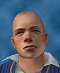
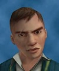
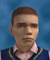

canis canem edit
 What is Bully?
Bully is a 2006 action-adventure video game developed by Rockstar Vancouver and published by Rockstar Games. Set in the fictional town of Bullworth, the single-player story follows juvenile delinquent student Jimmy Hopkins, who is involuntarily enrolled at Bullworth Academy boarding school for a year, and puts his efforts to rise through the ranks of the school system to stop bullying.
What is Bully?
Bully is a 2006 action-adventure video game developed by Rockstar Vancouver and published by Rockstar Games. Set in the fictional town of Bullworth, the single-player story follows juvenile delinquent student Jimmy Hopkins, who is involuntarily enrolled at Bullworth Academy boarding school for a year, and puts his efforts to rise through the ranks of the school system to stop bullying.
Characters and cliques...
 James "Jimmy" Hopkins is the playable character and the main protagonist in Bully. Jimmy is 15 years old and is smaller in height than most students, but is reasonably stocky. He has brown eyes, freckles on his cheeks and wears a gold stud earring on his left ear. His natural hair color is red, and his default hair style is a buzz cut. Jimmy was designed to be an everykid. Though he's aggressive and quick to fight, he's not truly malicious. As he states early on in the game, "I only give people what they have coming to them."
 Gary Smith is a main character and the main antagonist of Bully. Gary is slightly taller than Jimmy, but a bit more slender. He has brown hair in a low fade style with a parting to the left, brown eyes, and has a notable scar over his right eye. Gary has a very bad reputation among the other students and even staff in school. Gary admits that he suffers from ADD, and also shows traits of narcissism and paranoia, often imagining he's in charge a large empire.
 Pete Kowalski, full name Peter and also nicknamed Petey, is a main character in Bully. Pete is the smallest of all the older students, smaller than Jimmy and even most of the Non-Clique Students. He wears the same Bullworth blue sweater vest that Jimmy wears, with a pink shirt underneath and brown school slacks. He has dark brown hair worn in a buzzcut and brown eyes. His best friend is Jimmy, and this goes both ways, as Pete is also Jimmy's only friend. Pete was one of the 7 students profiled on the Bullworth Facebook. There, he was described as being a "normal guy" who enjoyed watching TV and playing video games, but also admitted to enjoying Art.
Earnest Jones; Nerds
Russell Northrop; Bullies
Derby Harrington; Preppies
Johnny Vincent; Greasers
Ted Thompson; Jocks
Edgar Munsen; Townies
Fun Facts!!!!
Artwork / Media